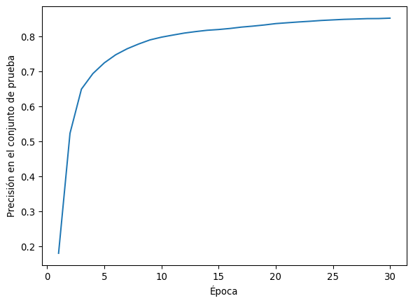

El elemento básico de las redes neuronales son las neuronas. Se basan en un modelo muy simplista del funcionamiento de las neuronas del cerebro. Sin embargo, este modelo no describe bien ese comportamiento que es mucho más complejo.
La neurona tiene las siguientes componentes:
Entradas: Los datos de entrada \(x_1, x_2, \dots, x_n\).
Pesos: Cada entrada tiene un peso asociado \(w_1, w_2, \dots, w_n\), que ajusta la importancia de esa entrada.
Bias (sesgo): Un valor adicional \(b\) que se agrega a la suma ponderada de las entradas.
Función de Activación: Una función no lineal que transforma la suma ponderada de entradas.
El cálculo básico que realiza una neurona es:
\[
z = \sum_{i=1}^n w_i x_i + b
\]
Note que esta es una transformación lineal de la entrada. La “magia” de las neuronas es su respuesta no-lineal a las señales, que obtenemos aplicando una función de activación al resultado (z) para obtener la salida final de la neurona:
\[
y_{out} = \sigma(z)
\]
Donde \(\sigma\) es una “función de activación” no lineal. Las más famosas son la función sigmoide
\[
\sigma(x) = \frac{e^x}{e^x + 1}\,,
\]
y la ReLU
\[
ReLU(x) = \begin{cases}x & x \geq 0\\ 0 & x < 0\end{cases}\,.
\]
Implementemos una neurona usando JAX:
import jax.numpy as jnpdef sigmoid(z):return1/ (1+ jnp.exp(-z))def neurona(x, w, b): z = jnp.dot(w, x) + b return sigmoid(z) x = jnp.array([1.0, 2.0]) # Entradasw = jnp.array([0.5, -0.5]) # Pesosb =0.1# Sesgosalida = neurona(x, w, b)print(salida)
0.40131235
Una red neuronal sencilla
Las neuronas no trabajan de forma aislada, sino que se agrupan en capas. En una red neuronal simple (una Red Perceptrón Multicapa o MLP), las neuronas están organizadas en tres tipos de capas:
Capa de Entrada: Recibe los datos de entrada.
Capas Ocultas: Procesan los datos. Pueden haber una o más de estas capas.
Capa de Salida: Genera las predicciones o el resultado final.
Cada capa oculta está formada por varias neuronas que reciben la salida de la capa anterior como entrada.
Cuando se usan muchas capas, se dice que la red es profunda.
Hagamos un ejemplo de una red neuronal multicapa con JAX:
def relu(z):return jnp.maximum(0, z)def red_neuronal(x, w1, b1, w2, b2):# Capa oculta z1 = jnp.dot(w1, x) + b1 a1 = relu(z1)# Capa de salida z2 = jnp.dot(w2, a1) + b2 salida = sigmoid(z2) # Usamos sigmoide en la salidareturn salida# Ejemplo de pesos y sesgos para una red simplew1 = jnp.array([[0.2, -0.4], [0.7, 0.3]]) # Pesos capa ocultab1 = jnp.array([0.1, -0.2]) # Sesgos capa ocultaw2 = jnp.array([0.6, -0.1]) # Pesos capa de salidab2 =0.05# Sesgo capa de salida# Entradasx = jnp.array([1.0, 0.5])# Calcular la salida de la redsalida_red = red_neuronal(x, w1, b1, w2, b2)print(salida_red)
0.5112481
Redes neuronales como aproximantes universales
El poder de las redes neuronales se puede explicar en parte porque pueden ajustar cualquier función.
Para ser más precisos, existe un teorema que dice que una red neuronal con una capa oculta puede aproximar cualquier función en un intervalo cerrado.
donde \(\delta F_i\) es el salto que hace la función entre el punto \(x_{i-1}\) y el punto \(x_i\). El parámetro \(w\) controla la altura del paso.
Note que esta fórmula tiene la forma de una red neuronal con una capa escondida con pesos todos iguales a \(w\) y sesgo \(-w X_i\), y una capa de salida sin función de activación con sesgo cero y pesos \(\delta F_i\).
import numpy as npdef red_neuronal(x, w1, b1, w2, b2):# Capa oculta z1 = jnp.matmul(x, w1.T) + b1 a1 = sigmoid(z1)# Capa de salida z2 = jnp.matmul(a1, w2.T) + b2return z2# Pesos calculados para ajustar los datosw =100w1 = w*jnp.ones(len(x_data)).reshape(-1,1)b1 =-w*x_data.reshape(-1)dF = np.zeros(len(x_data))dF[0] = y_data[0]dF[1:] = np.array([y_data[i] - y_data[i-1] for i inrange(1,len(y_data))])w2 = jnp.array(dF)b2 =0
La retropropagación es el proceso clave para entrenar redes neuronales mediante el cálculo eficiente de los gradientes de la función de pérdida con respecto a los pesos de la red. Utiliza la regla de la cadena para “propagar” el error desde la capa de salida hacia atrás, ajustando los pesos en cada capa para minimizar el error.
Este proceso se lleva a cabo en los siguientes pasos:
Dividir los datos en “mini-batches” y tratar un mini-batch a la vez. Luego repita todo este proceso varias veces (épocas).
Para cada mini-batch, calcule el paso hacia adelante capa por capa, guardando los resultados intermedios de la evaluación de la red porque serán requeridos por el cálculo del gradiente.
Luego, calcule el error cometido por la red usando una “función de costo” o “función de pérdida”.
Realice la retropropagación calculando la derivada de la pérdida respecto a cada uno de los pesos y sesgos, mediante autodiferenciación en modo inverso.
Luego use descenso de gradiente por cada mini-batch para cambiar los pesos en la dirección del gradiente.
Es importante inicializar los pesos de forma aleatoria. Si se inicializan todos idénticos permanecerán idénticos. La aleatoriedad rompe la simetría.
En JAX, el cálculo de los gradientes es fácil de implementar gracias a la función jax.grad, que realiza la diferenciación automática por nosotros.
Implementación en JAX con Fashion MNIST
Vamos a implementar una red neuronal simple (MLP) y entrenarla en el conjunto de datos Fashion MNIST. Este conjunto de datos contiene imágenes en escala de grises de artículos de ropa, cada una clasificada en una de 10 categorías.
1. Cargar el dataset de Fashion MNIST
Primero, cargamos el dataset de Fashion MNIST utilizando TensorFlow, que ofrece una forma sencilla de acceder a los datos.
import tensorflow as tffrom jax import grad, randomfrom jax import jitfashion_mnist = tf.keras.datasets.fashion_mnist(train_images, train_labels), (test_images, test_labels) = fashion_mnist.load_data()# Normalizamos los datostrain_images = train_images /255.0test_images = test_images /255.0# Convertimos las imágenes a formato adecuado para el MLPtrain_images = jnp.array(train_images.reshape(-1, 28*28)) test_images = jnp.array(test_images.reshape(-1, 28*28))train_labels = jnp.array(train_labels)test_labels = jnp.array(test_labels)
Ahora, definimos un MLP con una capa oculta utilizando JAX. Esta red tendrá 784 entradas (una por cada píxel de una imagen de 28x28), una capa oculta con 128 neuronas, y una capa de salida con 10 neuronas (una por cada clase).
# Función ReLU@jitdef relu(z):return jnp.maximum(0, z)# Función Softmax (para la salida de clasificación)@jitdef softmax(z): exp_z = jnp.exp(z)return exp_z / jnp.sum(exp_z, axis=-1, keepdims=True)# Definir MLP con una capa ocultadef mlp(params, x): w1, b1, w2, b2, w3, b3 = params# Capas ocultas z1 = jnp.dot(x, w1) + b1 a1 = relu(z1) z2 = jnp.dot(a1, w2) + b2 a2 = relu(z2)# Capa de salida z3 = jnp.dot(a2, w3) + b3return softmax(z3)# Inicialización de pesos y sesgosdef inicializar_pesos(rng, input_size, hidden_sizes, output_size): w1 = random.normal(rng, (input_size, hidden_sizes[0])) *0.01 b1 = jnp.zeros((hidden_sizes[0],)) w2 = random.normal(rng, (hidden_sizes[0], hidden_sizes[1])) *0.01 b2 = jnp.zeros((hidden_sizes[1],)) w3 = random.normal(rng, (hidden_sizes[1], output_size)) *0.01 b3 = jnp.zeros((output_size,))return w1, b1, w2, b2, w3, b3# Definir los tamaños de la redinput_size =28*28# Tamaño de la imagen aplanadahidden_sizes = [300, 100] # Tamaño de las capas ocultasoutput_size =10# Número de clases# Inicializar parámetrosrng = random.PRNGKey(0)params = inicializar_pesos(rng, input_size, hidden_sizes, output_size)
3. Definir la Función de Pérdida y la Retropropagación
La función de pérdida será la entropía cruzada. Esta está basada en la entropía de Shannon y consiste en
\[
-\left\langle \sum_{cat.} y \ln(y_{out})\right\rangle\,,
\]
donde \(y_{out}\) es la probabilidad predicha por la red para cada clase.
Calcularemos los gradientes de esta pérdida con respecto a los pesos utilizando jax.grad.
# Función de pérdida (Entropía Cruzada)@jitdef cross_entropy_loss(params, x, y): preds = mlp(params, x)return-jnp.mean(jnp.sum(y * jnp.log(preds), axis=-1))# Función para calcular la precisión@jitdef accuracy(params, x, y): predictions = jnp.argmax(mlp(params, x), axis=1)return jnp.mean(predictions == y)# Función de retropropagación y actualización de pesos@jitdef actualizar_pesos(params, x, y, learning_rate=0.01):# Calcular gradientes grads = grad(cross_entropy_loss)(params, x, y)# Actualizar los pesos params = [w - learning_rate * dwfor w, dw inzip(params, grads)]return params
4. Entrenamiento de la Red
El siguiente código entrena la red, no está optimizado y es bastante lento.
# Entrenamiento de la redepochs =30learning_rate =0.01batch_size =64accuracies = []for epoch inrange(epochs):# Dividimos los datos en minibatches num_batches =len(train_images) // batch_sizefor i inrange(num_batches): x_batch = train_images[i*batch_size:(i+1)*batch_size] y_batch = jnp.eye(10)[train_labels[i*batch_size:(i+1)*batch_size]] # One-hot encoding# Actualizar los pesos usando el gradiente params = actualizar_pesos(params, x_batch, y_batch, learning_rate)# Evaluar la precisión en el conjunto de prueba test_acc = accuracy(params, test_images, test_labels) accuracies.append(test_acc)print(f'Época {epoch+1}, Precisión en test: {test_acc:.3f}')
Época 1, Precisión en test: 0.180
Época 2, Precisión en test: 0.523
Época 3, Precisión en test: 0.650
Época 4, Precisión en test: 0.694
Época 5, Precisión en test: 0.725
Época 6, Precisión en test: 0.748
Época 7, Precisión en test: 0.765
Época 8, Precisión en test: 0.779
Época 9, Precisión en test: 0.790
Época 10, Precisión en test: 0.798
Época 11, Precisión en test: 0.804
Época 12, Precisión en test: 0.810
Época 13, Precisión en test: 0.814
Época 14, Precisión en test: 0.818
Época 15, Precisión en test: 0.820
Época 16, Precisión en test: 0.823
Época 17, Precisión en test: 0.827
Época 18, Precisión en test: 0.830
Época 19, Precisión en test: 0.833
Época 20, Precisión en test: 0.837
Época 21, Precisión en test: 0.839
Época 22, Precisión en test: 0.842
Época 23, Precisión en test: 0.844
Época 24, Precisión en test: 0.846
Época 25, Precisión en test: 0.848
Época 26, Precisión en test: 0.849
Época 27, Precisión en test: 0.850
Época 28, Precisión en test: 0.851
Época 29, Precisión en test: 0.851
Época 30, Precisión en test: 0.853
plt.plot(np.arange(len(accuracies)) +1, accuracies)plt.xlabel("Época")plt.ylabel("Precisión en el conjunto de prueba")
Text(0, 0.5, 'Precisión en el conjunto de prueba')

¡Tareas!
Tarea 11.6
Repita el ejemplo de Fashion MNIST usando la librería Flax. Compare los tiempos de entrenamiento y la precisión obtenida.
Tarea 11.7
En el ejemplo hecho en clase con Fashion MNIST, modifique el código para que el entrenamiento pare cuando la pérdida en el conjunto “test” no cambie a dos cifras decimales durante más de tres épocas.
Esta estrategia se llama “early stopping”.
Nota: Debe editar el código escrito en clase, no se puede usar una librería por fuera de jax o numpy.
Tarea 11.8
Repita el ejemplo de Fashion MNIST con varios algoritmos diferentes de optimización. Al menos gradiente con momentum y RMSProp. Discuta la diferencia en los resultados obtenidos.
Tarea 11.9
En el ejemplo de Fashion MNIST, use dos capas escondidas con 20 neuronas cada una en vez de las dos capas usadas en clase. Explique los resultados obtenidos.
Tarea 11.10
Repita el ejemplo de Fashion MNIST usando solo el \(10\%\) de las imágenes para el conjunto de entrenamiento. Explique los resultados obtenidos.